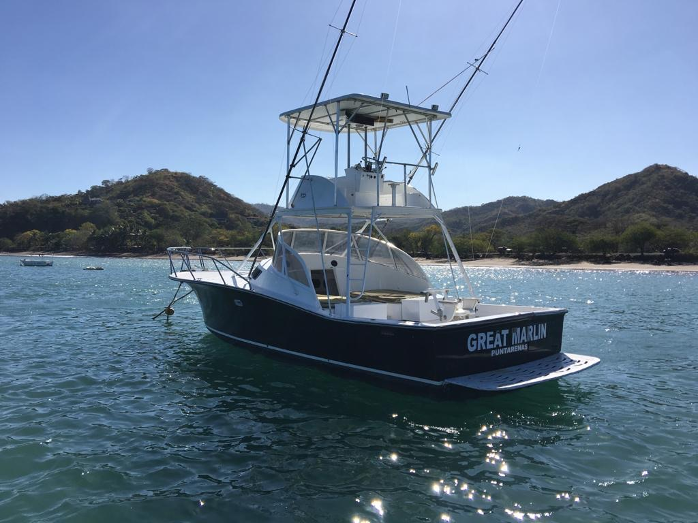
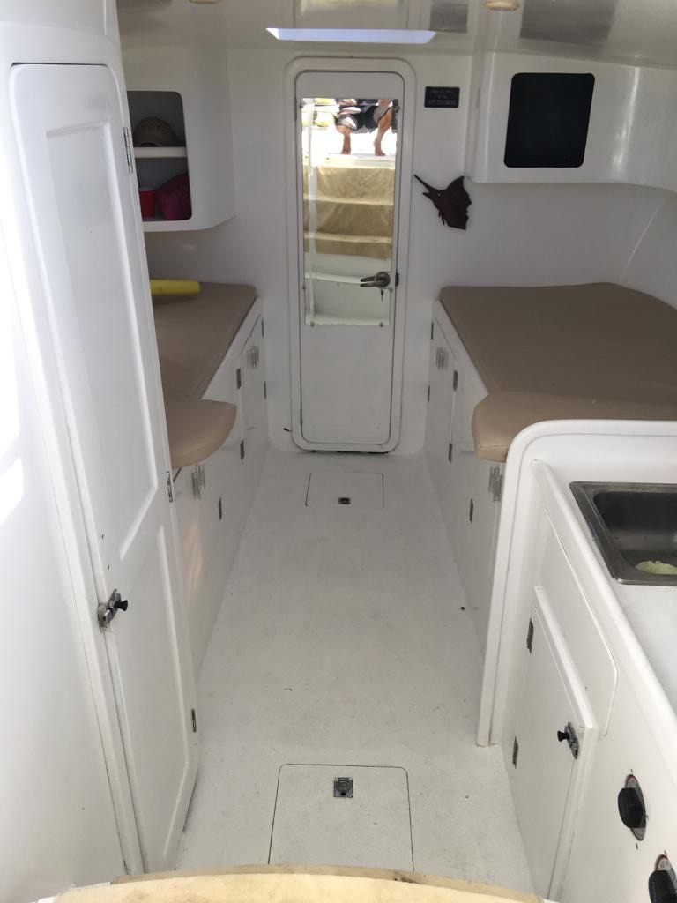

Your first day offshore
You have never done this. Most people who step aboard haven't. Here is the whole day — the quarter-to-seven meet, the run, the spread — and straight answers to the things people ask at the dock.
-
[ 06:45 · 07:00 ]
Lines off
You meet us at the marina at six forty-five, and by seven you are aboard and the lines are off. A normal full day runs six to eight hours from there. Tournament boats keep an eight-to-four schedule — a tournament can set its own hours, a fish cannot. Getting yourself to the marina is its own problem, and it has its own page.
-
[ 07:45 · 08:00 ]
The bottom disappears
Twenty-two to twenty-eight miles, forty-five minutes to an hour. Then the bottom is simply gone underneath you and there is nothing to look at in any direction. You are fishing before nine. What is out there that week depends on the month, and the month is a longer conversation.
-
[ 08:00 ]
The spread goes out
Dredges and teasers, and neither of them is trying to catch anything. Their whole job is to convince a sailfish that a school of bait is running away from the boat. Meanwhile the tower is reading the water: current rips and edges, frigates and boobies working, and — if you want yellowfin — the spinner dolphin they travel with. That is the hunt. The fishing comes after it.
-
[ THE SWITCH ]
Raised, then hooked
A fish comes up hot on a teaser. The teaser gets pulled away from it, deliberately, at the worst possible moment for the fish, and a circle-hooked ballyhoo drops into the hole where it was. That is bait-and-switch, it is the house method on this coast, and it is why the crew is suddenly shouting. Your job in it is small and specific, and someone will tell you exactly what it is about one second before you need to do it.
-
[ ON THE WAY IN ]
The beach
Often, on the run home, we pitch the rocks and the beach for roosterfish. Different fishery, different fish, no run required. It is how a fair number of people find out they like inshore fishing.
-
[ THE DOCK ]
What comes off the boat
Tuna, dorado and wahoo are cleaned and bagged at the dock and you walk off with them. Billfish do not come off the boat at all — they are released in the water, never lifted out, never gaffed. If a photograph of your sailfish exists, it was taken with the fish still swimming.
Bring almost nothing. That is the point of a crew.
In your bag
- Cash, in dollars. For the crew, at the end of a good day. There is a straight answer on tipping further down this page. It simply is not a percentage.
- Seasickness medication. The night before, and again the morning of. Not when you already feel it — at that point it is not medicine, it is optimism.
- Sun cover. Hat, sunglasses, sunscreen. The fighting cockpit is open by design, because that is where the work happens. The cabin below is shaded and you will use it.
- Your own reel, if you have one you love. Otherwise nothing. Nobody has ever regretted travelling light to this dock.
Already aboard
- The tackle and the bait. Rods, dredges, teasers, and ballyhoo rigged on circle hooks. The crew sets all of it and re-rigs it all day.
- The licence. Every angler needs an INCOPESCA sport fishing licence and we sort it out. There is an INCOPESCA office right at the marina. More on this below, including the part most websites get wrong.
- Shade, berths and a head. Below deck there is a cabin with berths, a galley sink, and a head with a real door.
- The provisions. The full day carries lunch, beer, water and fruit. The half day carries beer, water, fruit and snacks. The half day is a different trip in more ways than one, and that is the next section.
The half day is a good trip. It is not a sailfish trip.
Half day, $1,350. Full day, $1,750. Those are whole-boat prices for up to six guests, not per person — past six, each extra guest is $100. The full day comes provisioned with lunch, beer, water and fruit; the half day with beer, water, fruit and snacks. Custom days, multi-day bookings and events have no public price — ask when you book and you will get a straight quote.
Now the part that costs us money to tell you. The fish are forty-five minutes to an hour away, each way. Take that out of a half day and look at what is left. You cannot honestly sell a half-day billfish trip out of Herradura. The arithmetic does not work, and the boats that sell one anyway are hoping you will not do the arithmetic until you are already aboard.
So ours is not one. The half day is an inshore trip — roosterfish, cubera snapper and jack crevalle, worked along the rocks and the beach. It is a genuinely good day on the water. It is the better day for a lot of families. Some people prefer it outright. It is simply not the day you flew here for if what you want is a sailfish.
The full day is the offshore product. If sails are what you came for, that is the trip, and the days and rates are on the front page.
The run does not get shorter because you booked a half day.
Ask anyone selling a half-day billfish trip out of Herradura how they plan to get there and back
A sixty-foot boat does not get to a different ocean.
People are too polite to ask this one, so here it is answered anyway. Great Marlin is thirty-six feet — black hull, white tuna tower, outriggers, open fighting cockpit. Some of the boats in the next slips are longer. A few of them are much longer.
The fish are twenty-two to twenty-eight miles out. Every boat in this marina runs to the same water, works the same rips and edges, and hunts the same bird flocks. A longer hull gets there and finds exactly the same sailfish.
Here is the honest trade, because there is one. On a thirty-six you feel the sea more. A bigger hull flattens the ride, and on a rough May morning that is worth real money to some people. We are not going to pretend otherwise. If a heavy sea would ruin your day, fish the dry season or fish a bigger boat — and we will tell you that on the phone rather than after you have paid.
On price we will say only this: comparable thirty-six and thirty-seven footers at this marina list around $2,600 a day. Ours are on the front page. You can do the rest.
- 01 The tower Finding fish Sails sit under the frigates and boobies. Yellowfin travel with the spinner dolphin. You find both by looking down at the water from above it, not across it — which is the entire argument for a tuna tower, and the reason it is not decoration.
- 02 The cockpit Room to work Open, by design. When something big eats, everybody needs to move at once and the fight goes wherever the fish decides it goes. Space back here is not luxury. It is the difference between landing it and telling a story about it.
- 03 Below deck Berths · galley sink · head A cabin with berths, a sink, and a head with a door that closes. It is the first thing families ask about and close to the last thing anyone puts in a brochure.

That is what is under the deck. Berths either side, a sink, a door through to the cockpit. It is not a stateroom and we are not going to call it one.
It matters because of what a fishing day actually is. Somebody always wants to lie down. Somebody always needs the head at exactly the wrong moment, an hour from land, and on a boat without one that becomes a story people tell for years — not fondly.
-
Do I need a fishing licence?
Yes. Every angler aboard needs an INCOPESCA sport fishing licence — and this is where nearly every charter website on this coast is wrong. The regulation says sin restricción de edad: without age restriction. Your nine-year-old needs one too. The line you have read a dozen times, that only anglers over sixteen need a licence, has been copied from site to site until it started to sound official. It is not true.
Budget about fifteen dollars a head for a short-trip licence. INCOPESCA sets that rate rather than us and it can move, so treat it as approximate rather than a quote. Practically, though, it is not your job — the paperwork goes through the boat, and the INCOPESCA office is at the marina itself.
-
Can I keep what I catch?
The meat fish, yes. Tuna, dorado and wahoo come off the boat cleaned and bagged. The limit is five fish per trip, per boat. Per boat — not five each. That surprises almost everyone, and plenty of charters either do not know it or would rather you found out at the dock.
They are for your own table or for taxidermy. Selling sport-caught fish is illegal here. Billfish never enter the count at all: sailfish and marlin are released, every time, without exception.
-
Am I expected to tip the crew?
It is customary on a good day, and the crew works harder than anyone else on the boat. Bring cash, in dollars.
We are not going to invent a percentage for you. Every site that prints one made it up. The going rate is what you would tip a good guide anywhere — and if you want an actual number, ask when you book. You will get a straight one rather than a coy one.
-
Can I bring the kids?
Yes, and the boat is set up for it: berths to nap in, a shaded cabin, a head with a door. The licence applies to them the same as everyone, which is the age rule above doing its work.
Now the honest part, because we would rather have you back than have you once. A full day offshore with young children is a real commitment. Six to eight hours, an hour from land, and long flat stretches between bites. The inshore half day is often the better family trip — closer in, more going on, shorter, and a roosterfish does not care how old you are. If that is your group, say so when you message and we will point you at the right day rather than the expensive one.
-
What if I get seasick?
Take the medication the night before and again the morning of. Not when you start to feel it — by then it does not work. That is the single most useful sentence on this page and almost nobody acts on it.
We are not going to promise you a flat ocean. Green season mornings, May to November, are usually calm, and the seas get rougher May through August. The dry season, December to April, is the calm-water window — and it is also peak sailfish. June to August is a genuine second push, and green season trades sails for tuna and dorado; the full calendar is here, month by month. Some people get sick anyway. It is not a moral failing. Tell the crew and they will look after you.
Ask the question you think is stupid.
Every first-timer turns up with the same handful. We would rather answer one more now than have you wondering about it on the dock at quarter to seven. Email works too.